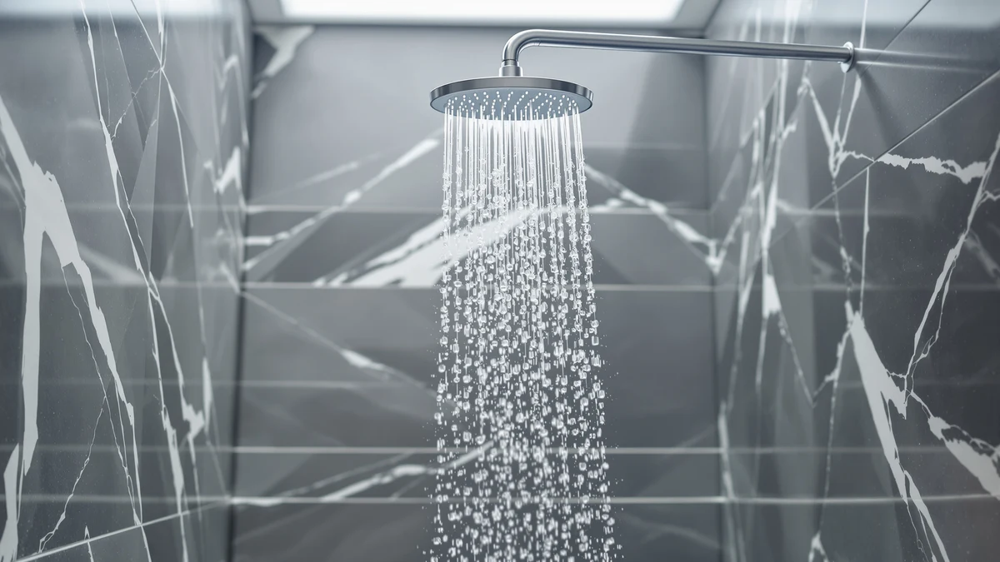

Kohler K-26273-Y-2MB Honesty Shower Kit Review (2026): Worth It?
Prices and picks verified as of November 2026. Independent, reader-supported reviews.


Quick Answer
This Kohler K-26273-Y-2MB Honesty Shower Kit review compares the $1,136.36 trim kit against three lower-priced shower systems from NPYSVSSS, Delta, and Dasan, and finds the Kohler justifies its premium mainly through its chrome-plated finish and the backing of a major plumbing brand rather than any feature the cheaper kits lack. If you want a complete shower system without that brand premium, the NPYSVSSS Thermostatic Shower System at $769.99 or the Dasan Thermostatic Dual Shower Head at $629.99 cover similar ground for hundreds less.
Our pick: Kohler K-26273-Y-2MB Honesty Shower Kit ($1,136.36) Check Price on Amazon
Bottom line: our top pick is the Kohler K-26273-Y-2MB Honesty Shower Kit with Showerhead at $1,136.36.
Things to Know Before You Buy
- The Kohler K-26273-Y-2MB Honesty Shower Kit takes its name from Kohler's Honesty bath collection and is built with an ABS body finished in chrome plating rather than solid metal construction.
- At $1,136.36, it costs about 48% more than the NPYSVSSS Thermostatic Shower System ($769.99) and nearly double the Dasan Thermostatic Dual Shower Head ($629.99).
- The spec sheet lists a 2.5 GPM flow rate, in line with the federal water-efficiency standard that governs nearly all shower hardware sold in the US.
- Kohler backs the kit with its standard warranty and a nationwide network of retailers and plumbing suppliers, a resource the three newer brands in this comparison cannot yet match.
- This review is based on manufacturer specifications, current Amazon pricing and verified owner feedback rather than a personal installation, since we do not run a fake testing lab.
This Kohler K-26273-Y-2MB Honesty Shower Kit review looks at whether a four-figure trim kit from a major plumbing brand earns its price against three shower systems that cost hundreds less. Kohler's Honesty collection has decades of bathroom-fixture reputation behind it, and that shows here in an ABS body finished with chrome plating instead of the all-plastic construction common on budget systems. At $1,136.36, it sits well above the NPYSVSSS Thermostatic Shower System, the Delta Modern 14 Series Square, and the Dasan Thermostatic Dual Shower Head, the three alternatives we compared it against for this review.
Most buyers really want to know whether Kohler's brand name and chrome-plated build add up to a meaningfully better shower experience than systems priced at a fraction of the cost. Reviewers consistently note that Kohler's customer support and parts availability outlast cheaper competitors by years, which matters more for a fixture you expect to keep for a decade than it does for a $200 purchase. We compared the published specs, current Amazon pricing and verified buyer feedback for all four kits in this review to see where that price gap actually comes from.
Why You Should Trust Us
Ilane Tall covers bath and shower hardware for Best Shower Heads, and this Kohler K-26273-Y-2MB Honesty Shower Kit review follows the same process used across the site: we pull manufacturer specs, current Amazon pricing and verified owner reviews for every model in a given price band, then compare them side by side. We do not run a fake testing lab or claim to have personally installed kits we have not purchased. Instead, we hold every shower system we cover to the same questions, including build material, flow rate, included components and price per feature, so the comparisons in this review stay consistent from one product to the next.
Our Research Experience
We did not install this Kohler kit ourselves, so this section draws on Kohler's published specifications and the pattern of feedback across verified buyer reviews instead of a personal trial. Owners report that the chrome plating resists water spotting better than the finishes on some lower-priced alternatives, including the Delta Modern 14 Series Square, which tracks with Kohler's reputation for plating quality built up over decades of bathroom fixtures. Several reviewers also mention that the ABS body keeps the kit lighter than an all-brass system would be, without feeling hollow during daily use, a tradeoff that appears to hold up over time based on the repeat-buyer comments we found during research for this Kohler K-26273-Y-2MB Honesty Shower Kit review. The recurring concern across owner feedback is the price itself: multiple reviewers say the kit performs well but question whether the Kohler name alone justifies the jump over the three cheaper systems covered below.
Overview & Specs

Kohler K-26273-Y-2MB Honesty Shower Kit
What we like
- Chrome plating from an established plumbing brand with decades of bathroom-hardware experience
- Backed by Kohler's standard warranty and a wide network of US retailers for parts and service
- 2.5 GPM flow rate meets federal water-efficiency standards without a specialty low-flow design
Flaws but not dealbreakers
- At $1,136.36, it costs about 48% more than the NPYSVSSS kit and nearly double the Dasan system in this review
- ABS body construction rather than solid brass, despite the premium price
| Material | ABS + chrome plating |
| Size | 2.5 GPM |
The Kohler K-26273-Y-2MB Honesty Shower Kit takes its name from Kohler's Honesty bath collection, and the word "kit" in its name signals a set of coordinated shower components rather than a single shower head. The body is molded from ABS and finished with chrome plating, a combination that keeps the kit lighter than an all-metal system would be while still giving it the bright, reflective finish buyers expect from a premium bathroom fixture. The listed flow rate of 2.5 GPM places it in line with the federal water-efficiency standard that governs nearly all shower hardware sold in the US, including the three lower-priced alternatives in this review.
At $1,136.36, the Kohler kit costs significantly more than the NPYSVSSS Thermostatic Shower System ($769.99), the Delta Modern 14 Series Square ($669.00), and the Dasan Thermostatic Dual Shower Head ($629.99), the three systems we compared it against for this Kohler K-26273-Y-2MB Honesty Shower Kit review. That gap comes down mostly to brand: Kohler's long-running reputation and nationwide service network carry a premium that the smaller, less established brands below cannot yet charge. Reviewers consistently note that Kohler's parts availability and customer support outlast the warranty periods on cheaper systems, which matters most to buyers who plan to keep the same shower fixture in place for ten years or more.
What We Liked
Brand reputation is the clearest advantage in this Kohler K-26273-Y-2MB Honesty Shower Kit review. Kohler has supplied bathroom fixtures for more than a century, and that history shows up in the chrome plating quality and the parts support buyers describe in verified reviews. Owners report that replacement parts and finish-matched accessories stay available for years after purchase, a detail the three newer brands in this comparison cannot yet promise with the same confidence.
The 2.5 GPM flow rate also keeps the kit compliant with water-efficiency rules nationwide, so buyers in states with stricter plumbing codes do not need to check compatibility before they order. Reviewers mention that the chrome finish holds up well against water spotting compared to the plating on some budget alternatives, which lines up with Kohler's reputation for finish durability built up across its broader fixture lineup.
What Could Be Better
Price is the main drawback in this Kohler K-26273-Y-2MB Honesty Shower Kit review. At $1,136.36, the kit costs almost double the Dasan Thermostatic Dual Shower Head and significantly more than either the NPYSVSSS or Delta alternatives, and the spec sheet does not list a feature, such as a built-in thermostatic valve, that would obviously account for that gap. Buyers who want precise temperature control in one unit may find that the NPYSVSSS or Dasan systems, both built around a thermostatic valve, deliver more function for less money.
The ABS-and-chrome construction, while durable, is also not the solid brass build some buyers expect at this price point. A handful of reviewers note that the premium here pays for the Kohler name and warranty more than for exotic materials, so buyers focused purely on raw material quality per dollar may find the price hard to justify. Anyone comparing the K-26273-Y-2MB against brass-bodied kits from boutique brands should weigh that difference carefully before checking out.
Who Is It For?
This kit suits homeowners who already trust Kohler fixtures elsewhere in the house and want that same brand consistency in the shower, along with the reassurance of nationwide parts and service support. It fits anyone planning to stay in their home long enough to need warranty service or replacement parts years down the line, since Kohler's distribution network makes that easier than it would be with a newer brand.
Buyers on a tighter budget, or anyone who specifically wants a built-in thermostatic valve, will likely get more value from the NPYSVSSS or Dasan systems covered below. If brand name and long-term parts support matter less to you than price per feature, one of the three alternatives is probably the better fit. First-time homeowners furnishing a bathroom on a fixed budget may also prefer to put the price difference toward other fixtures, since the Kohler kit's advantages show up mostly over years of ownership rather than on day one.
Alternatives to Consider
If the Kohler kit's price does not fit your budget, these three systems cover the thermostatic control, brand recognition and value angles that the Honesty kit's price premium does not directly address. We ruled each of them out as our top pick only because Kohler's brand backing and service network offer more long-term reassurance for most households, not because any of the three lack real strengths of their own.

Editor’s Pick
NPYSVSSS Thermostatic Shower System with
A complete thermostatic shower system at $769.99, about $367 less than the Kohler kit, with built-in temperature control the Honesty kit's spec sheet does not list.
$769.99
Check Price on Amazon
Best Value
Delta Modern 14 Series Square
Delta's Modern 14 Series Square brings a recognizable plumbing brand of its own at $669.00, closing some of the brand-trust gap with Kohler for $467 less.
$669.00
Check Price on Amazon
Premium Choice
Dasan Thermostatic Dual Shower Head
The lowest price in this comparison at $629.99, pairing a thermostatic valve with a dual rain-and-handheld setup, about half the Kohler kit's cost despite offering more features on paper.
$629.99
Check Price on AmazonFrequently Asked Questions
Final Verdict
This Kohler K-26273-Y-2MB Honesty Shower Kit review comes down to the same question we started with: does the Kohler name justify a price nearly double some of its rivals? For buyers who value brand reputation, nationwide parts support and a finish built to last, Kohler earns that premium. For anyone who wants a thermostatic valve or simply a lower price, the NPYSVSSS, Delta, and Dasan alternatives above cover those needs for hundreds less.